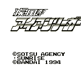

Iron Leaguer - Gameboy Games
Table of Contents
|
Series Information
|
Gameboy Games
Iron League

Genre:
Platform game
Controls
A button
: Jump
B button
: Shoot
Start
: Pause
Select
: [not used]
No other information available.
Anime Video Game Resource Center © 1998 by
Luis A. Cruz